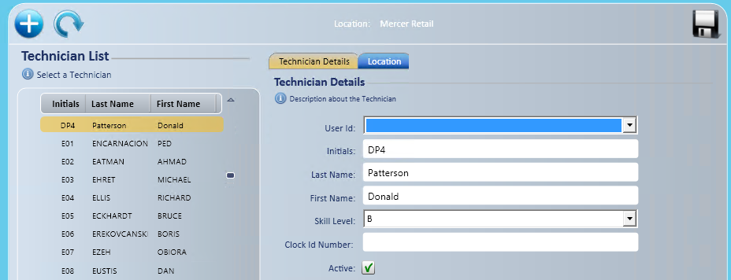
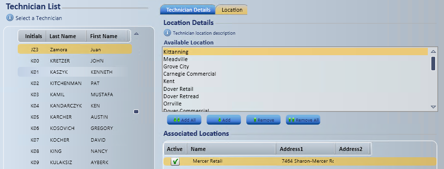

Technicians Setup and Maintenance
Use Technicians to set up the people who do the work. A technician can be a technician only, or can also have a user ID if they'll perform any duties in the application. Each skill level holds its own labor rate. See Labor Rate Setup and Maintenance.
- Go to Manage; Company Setup; Technicians.
Create a technician

- Select Add .
- A window displays "Added a New Technician Record".
- On the Technician Details tab, select a User Id only if the technician will also use the application. Otherwise, leave it blank.
- Enter the Initials (up to 4 characters).
- Enter the Last Name.
- Enter the First Name.
- Select the Skill Level.
- Enter the Clock ID Number, if applicable.
- Make sure the status is set to active.
- Select Save . "Save Operation Successful" displays.

Assign stores to a technician
- On the Location tab, select the stores.
- To select several stores, hold CTRL and select each one.
- Select Add All if you want all stores.
- The stores display in the Associated Locations box below Available Locations.
- Make sure Active is checked next to each store you added.
- Select Save . "Save Operation Successful" displays.
Change a technician
Select the technician in the list first. The list is sorted alphabetically by initials.
To inactivate a technician:
- On the Technician Details tab, clear the active status and select Save . "Save Operation Successful" displays.
To change the skill level:
- Select the skill level and select Save . "Save Operation Successful" displays.
To add stores, follow the steps in Assign stores to a technician above.
To remove stores:
- In the Associated Locations box, select the stores to remove.
- To select several stores, hold CTRL and select each one.
- Select Remove, or Remove All to remove every store.
- Select Save . "Save Operation Successful" displays.
Note: By default, the list shows only active technicians. To show all of them, check Show Inactive Technicians  below the technician list.
below the technician list.